Welcome to the final chapter of this course.
The main topics are recursion, which is another form of repetition and functional programming, which relies heahily on recursion and lambda calculus.
Recursion is the natural way of repetition.
We can often observe recurring patterns in nature, where the next iteration looks like a smaller or larger version of the previous iteration.
This concept is also used to define repetition in mathematics.
The Fibonacci numbers are just one famous example, which can also be observed in nature, e.g. sunflowers display fibonacci spirals in the arrangement of their seed.
The definition of Fibonacci numbers is:
F0 = 0
F1 = 1
Fn = Fn-1 + Fn - 2
Basically if we want to compute the sixth fibonacci number, i.e. F6, we first have to compute F5 + F4.
F0 = 0
F1 = 1
F2 = F1 + F0 = 1 + 0 = 1
F3 = F2 + F1 = 1 + 1 = 2
F4 = F3 + F2 = 2 + 1 = 3
F5 = F4 + F3 = 3 + 2 = 5
F6 = F5 + F4 = 5 + 3 = 8
...
which leads us again to:
Fn = Fn-1 + Fn - 2
So what is reqursion?
To quote Stephen Hawking: "To understand recursion, one must first understand recursion."
Recursive constructs are those, that define themselves.
Remeber how we talked about defining the termination condition for our loops?
Without them, we would have endless loops which would lead to incorrectly working programs.
Same applies to recursion, however, instead of loops we have to use other means to achieve repetition.
Nevertheless, we still have to think about when the repetition stops, otherwise we get endless recursion.
The first and the more simpler approach to achieve recursion is by using operations: i.e. our functions and procedures.
Since we have already defined the Fibonacci number function, let us implement it following these simple steps:
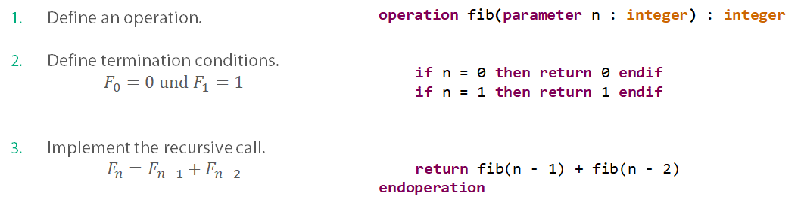
We have basically translated the mathematical function into our program word for word.
It should be noted, that this is not the most optimized solution, far from it, but it is enough in the context of our beginner programming course.
Any repetitive algorithm can be represented either via a loop or via recursion.
Sometimes one approach can produce a more optimal solution or more elegant code that the other.
In order to translate a loop into a recursion we have to remember one thing:
Anything that is changed inside of a loop and controls its execution must be passed as a parameter for our recursive operation.
If we simply change it in the operation and not pass it, the next iteration of our operation will now know of these changes.
Let us demonstrate it in the next example:
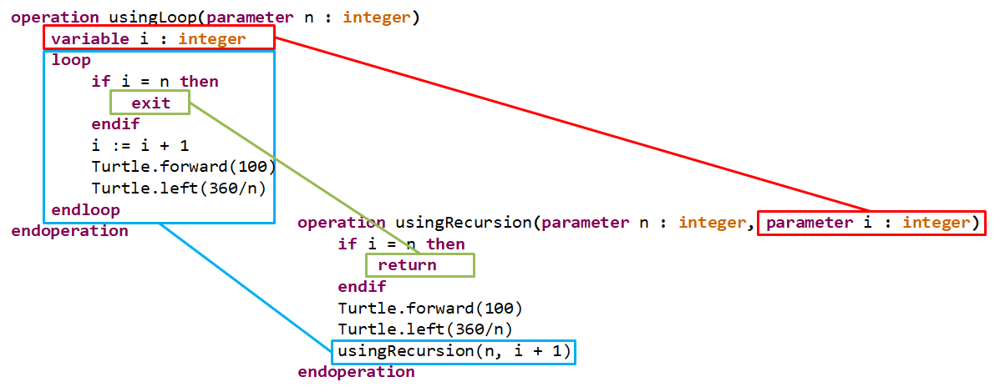
The operation usingLoop(n : integer) draws a polygon depending on the parameter n.
We use a loop which is terminated once the counter variable i reaches n, the value of i is changed locally within the loop.
Same algorithm is implemented in the recursive operation usingRecursion(n : integer, i : integer).
However, as you can see, we now have an additional parameter i, which has the same function as i in usingLoop(n : integer).
If i equals n we return from our operation terminating the recursion.
If not, we invoke usingRecursion(n : integer, i : integer) again, but with an incremented value of i.
The code below contains an additional operation interfaceForUsingRecursion(n : integer).
The task of this operation is to hide the parameter i from the user, after all it should start with a 0 anyway.
Go ahead and try this example in your Eclipse, the produced output should look like this:
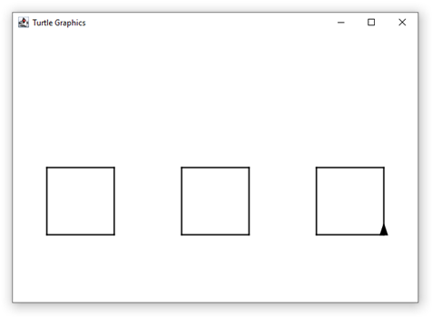
Data types can also be defined in a recursive way, usually when implementing data structures.
A recursive type is one that references itself, for example we can define a List type which references other Lists.
Other data structures such as trees are usually defined in a similar way.
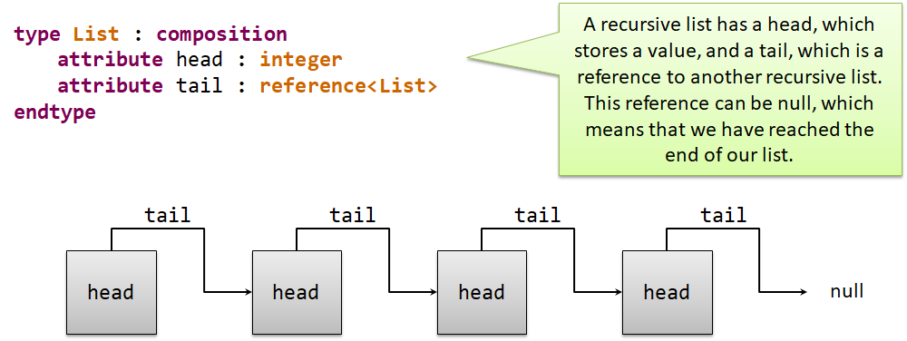
Since we have a recursively defines data structure, it is actually very easy to define recursive operations to work with such types.
For example, if we want to append a value at the end of the list, we simply have to find that end first.
We have found the end when the tail reference is null, in which case we create a new tail list, otherwise we search in our current tail.
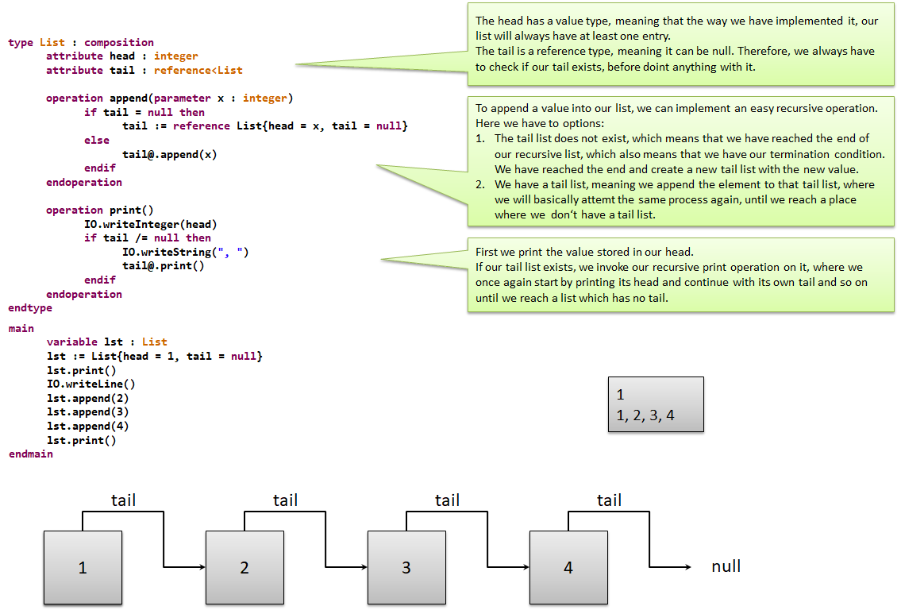
By no means does that mean, that we only can implement recursive operation with recursive data structures.
The code below demonstrates both recursive and non-recursive operations with the same semantics.
Try it out, you will see that both versions produce the same results, however, the recursive implementation tends to be more elegant.
Slowly we have reached the final topic of our programming course, the functional programming.
This programming paradigm was a parallel development to the imperative programming, which has led to procedural and object-oriented programming.
You will notice, that functional programming is quite different to what we were doint in the previous chapters.
The keystone of functional programming is lanbda calculus, wherin the intention is to be able to represent any mathematical expression as a function.
Functions are nothing new to us, we have already translated mathematical functions into code in chapter 4.
However, if we want wrap every expression into functions, we might end up with a lot of named functions that we may use only once.
If we introduce anonymous functions instead, we no longer need to find a name for a function that we need only once.
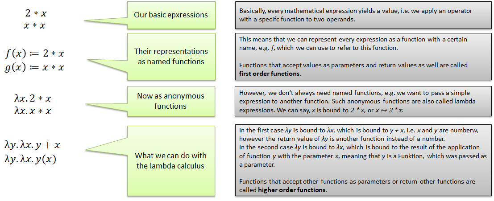
As entioned, lambda calculus is the keystone of functional programming, meaning that we often use lambda expression to pass around functionality.
Other than that, loops and state changes are frowned upon in functional programming, many pure functional languages lack loops and assignemt statements.
Instead we have to rely on recursion and constant values.
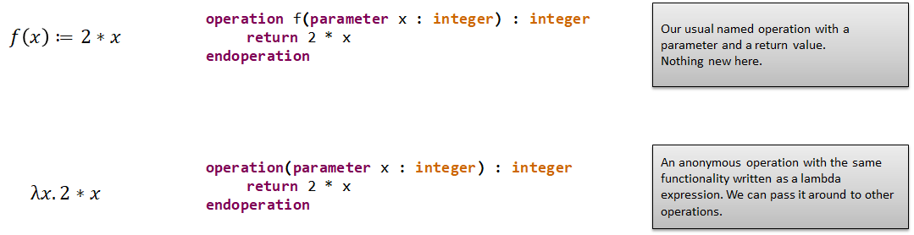
Oh and have we mentioned that we can pass functionality around as data?
We can do that in functional programming, our operations can be stored in variables, parameters and attributes as data.
Yes, functionality can be data too.
The variables and other data containers must have a corresponding operation type as their data type to be able to do that.
If we want to return an operation, the return type must be an operation type.
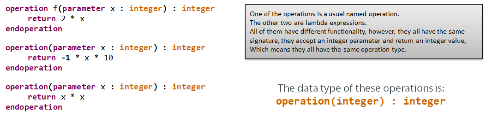
Copy and paste the code below into your Eclipse, execute your program step by step to get a better feeling for lambda expressions.
In the code example above the functions f and g accept and return simple integer values.
Such functions, which do not accept or return other functions are called first order functions.
On the other hand, the function sum returns another function, while yAppliedToX accepts and returns functions.
Such functions are called higher order functions.
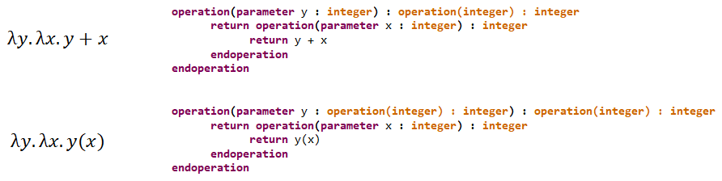
MuLE has a very explicit syntax, most functional and multi-paradigm languages have a far shorter notation for lambda expressions compared to MuLE.
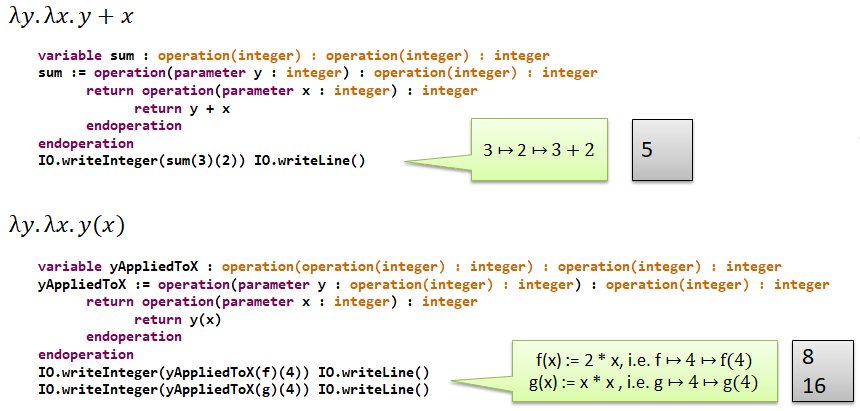
This approach, wherein we pass a single parameter to a function and need to return another function in order to pass additional parameters is called currying.
We want to implement a simple calculator function, which accepts two values as well as another function which is then applied to these values.
The passed function represent an arithmetical operator and therefore is imperative for the outcome.
We also need another operation, which proved us with a mathematical function depending on a mathematical symbol.
Meaning that if we pass a "+", we get the function which adds two values.
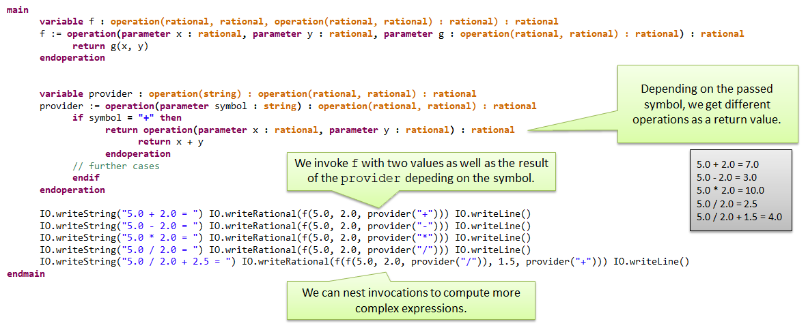
By now we have discussed everything that there is to functional programming, at least in MuLE.
But we are pretty sure, you are still wondering, why? Why do we need to do it this way?
After all, procedural programming is great when translating algorithms, object-oriented programming is awesome when we need to represent a real world scenario.
We can translate mathematical functions using operations with return values, why ddo we need lambda expressions?
So why do we need them.
To put it short, it allows us to create operations which can change their behaviour depending on the passed lambda expression.
For example, have a list of integers and we want to apply different operations to these values.
We can implement a forEach operation which accepts a list of integers and an operation which also accepts an integer.
This operation is then applied to every integer in the list.
This way we can apply different operations to the values in the list.